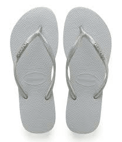

13 things you need to bring before going to Vietnam!
Hundreds of thousands of people travel to experience the wonders of south-east Asia every single year, and understandably, Vietnam – the land of emerald waters, tropical islands and an exceptional history – is one of the top destinations in that part of the world. Although visitors may travel on a variety of budgets, trip durations and holidaying styles, here’s a list of essential items that should definitely be packed no matter what. Take a look at these 15 suggestions:
1.Backpacks
Considering all the walking and traveling you will be doing, a thick-strapped backpack is necessary to carry all of your belongings, like a change of clothes, a water bottle, sunscreen and snacks for the day. Plus, if you make any purchases along the way, they can be stored safely in your pack instead of in plastic bags that would otherwise get in the way.
2.A Travel Pillow
If you are planning on taking a number of trips around the country, prepare for hours upon hours of time spent on the road. These days, transport within Vietnam offers air-conditioning, but a travel pillow will aid you in getting that much needed shut-eye whilst in transit.
3.Ear Plugs
Light sleepers should bring a pair of ear plugs with them to get a full night of restful sleep. Very cheap and effective, they are a way to ward off distracting snorers in shared hostel rooms, as well as that wailing baby on that long bus journey across the country.
4.A Quick-Dry Towel
Not all hostels or hotels will provide towels free of charge, so a super lightweight and non-bulky option might be a good idea. A quick dry towel is an essential item that can really enhance your traveling experience, whether it is drying off after getting caught in torrential rain during the monsoon season or covering yourself after a swim.
5.Diarrhea Treatment
There’s no getting away from it, at some point during your travels, it is likely that you will be hit by a stomach bug from drinking non-bottled water or simply eating something you’re not used to. Although most symptoms will pass quite quickly, it might be worthwhile to bring along travel remedies to speed up the recovery process when you’re in areas far away from a drug store.
6.Below-the-Knee Skirts or Trousers
If you would like to get access to pagodas and temples, modest below-the-knee clothing is a must. Despite the heat, local men and women dress quite conservatively, and you should be expected to do the same by covering your shoulders and legs, especially when visiting sacred places and government buildings. Avoid 100% cotton garments as you are likely to be too hot and uncomfortable – the perfect balance being a blend of Rayon and Polyester.
7.Durable Shoes

If you’re planning on doing a lot of trekking or hiking on your trip, a pair of durable closed-toe shoes will ensure that your feet remain blister-free and protected from the elements. Alternatively, opt for a comfortable flat sandal as sneakers may not be too kind to your feet in the warm weather.
8.Flip-Flops
Alongside practical footwear, bring along a pair of flip-flops – or even better, purchase some once you’re there. Not only will these be easy to take off when visiting temples, certain bars and restaurants, but they will also allow your feet to breathe in the hot and humid weather. Avoid expensive footwear that might ‘walk away’ when you’re not looking.
9.Travel Adapter
Thai sockets fit two plug types. However whilst your plug will work in Thailand, it is recommended you come prepared with a global adapter in case you have to travel through other countries.
10.Portable Phone Charger
Pre-charged battery packs and portable phone chargers will save your life on that long bus or train ride. This is also essential if you plan on using your GPS a lot, meaning that your battery will burn down faster. After all, there’s nothing worse than being stranded in a place you don’t know.
11.Sun Protection and a Hat
During the monsoon season, it is wise to bring a light jacket to protect you from the rain that can come and go in a flash. Or do as the locals do and opt for a plastic poncho, especially useful if you are planning on cycling or riding a motorbike.
12.Bug-Repellent
Although malaria is rare and seldom found in most areas of Vietnam, Dengue fever can pose quite a problem – this is a viral infection that knows no bounds, with outbreaks in urban areas being quite common. Due to this, it is wise to carry a bottle of insect-repellent just in case. Try to remember to apply the mosquito repellent every morning before you head out for the day and to re-apply right before dusk.
13.Tiger Balm or Cortisone Cream
If you do happen to get bitten by mosquitoes, tiger balm or cortisone cream can prevent the bites from getting infected. Rub it over the affected area to reduce aches, swelling and other discomfort.
source:theculturetrip.com